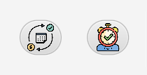
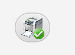

La ventana Account es la principal al ejecutar la aplicación. Al iniciar, en la parte superior aparecerán diferentes apartados de botones.
Tendrás los botones para el uso de la tabla. El primero para crear una nueva fila (nuevo grupo de gastos), el segundo para borrar la fila seleccionada (grupo de gastos), y el tercero para actualizar los datos de los grupos de la tabla.

Dos botones para la navegación entre ventanas. El primero para ir a la ventana de gastos recurrentes y el segundo para la de gastos puntuales.
En caso de querer dirigirte a cualquiera de las dos ventanas, deberar primero seleccionar un grupo haciendo clic sobre la fila y luego haciendo clic sobre el boton de la ventana a la que queires
Botón para sacar el informe de la ventana de Account.
Utiliza el primer Combo para elegir por el atributo que quieres filtrar. El segundo para la condición y el TextField para escribir el dato. Finalmente, el botón de buscar ejecutará la acción seleccionada.

En la primera pestaña aparece una tabla con los grupos de las cuentas, y en la segunda pestaña, aparecen los gráficos correspondientes.
Es una tabla editable con diferentes celdas. El ID es auto generado y su celda no es editable, el nombre y la descripción son TextField. La fecha es un DatePicker, y las celdas de plan y divisa son ComboBox. La celda de Balance no es editable.
Los gráficos se actualizan automáticamente.
En la parte superior de la ventana, tienes un Menubar con diferentes opciones: